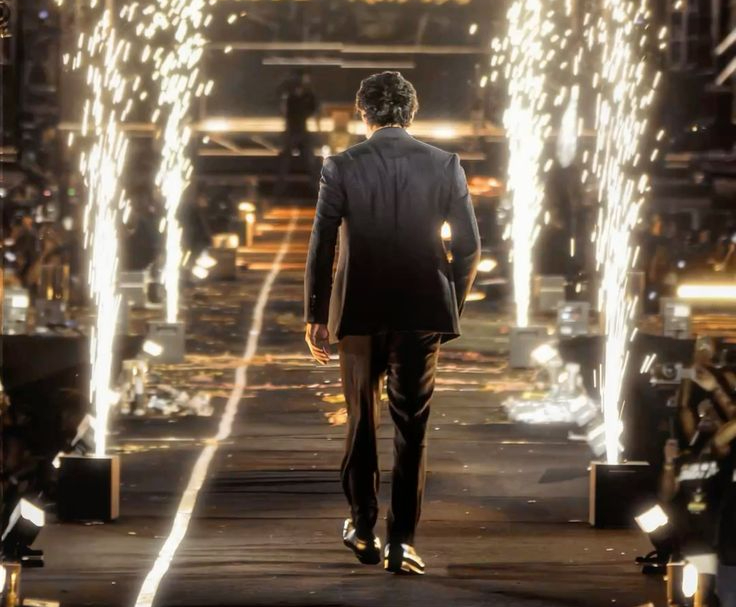
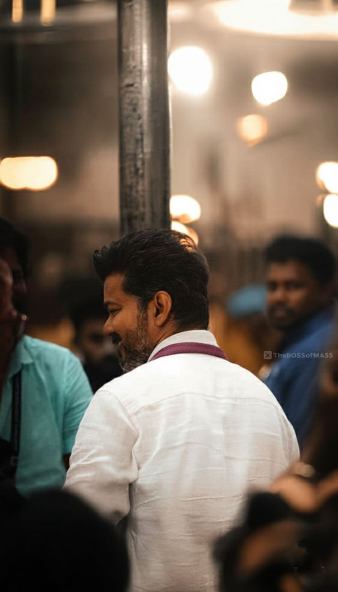
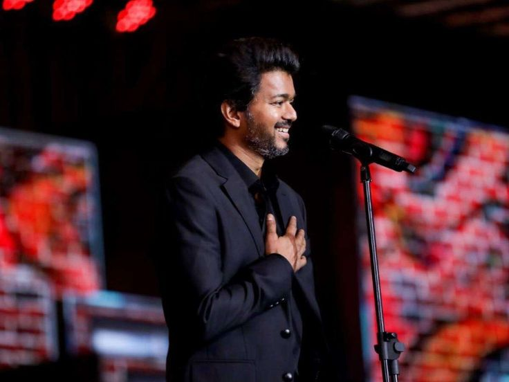

A quiet consistency that speaks louder than any applause — and what his journey taught me about staying grounded.
My connection with Vijay is not something that happened instantly — it's something that quietly grew over time and became a part of who I am without me even realizing it. It all started when I watched Vettaikaaran. At that point, it was just another movie, just another watch. But there was something about him — his presence, his energy, the way he carried himself — that stayed with me even after the movie ended. That feeling didn't fade. Instead, it stayed, and that's when I realized I had become a fan.
As time went on, that admiration turned into something much deeper. It was no longer just about enjoying his films — it was about following his journey, observing his growth, and connecting with the person he seemed to be beyond the screen. Today, that connection is not just internal — it reflects in my everyday life. I have wall posters of Vijay all over my house, and each one means something to me. They're not just posters — they're reminders of a journey I've been following for years.

Every time I look at those posters, I don't just see an actor. I see consistency. I see someone who has shown up, again and again, without losing his place, without losing himself. In an industry where people come and go, where staying relevant is a challenge in itself, he has managed to stand strong for years. That kind of consistency is rare, and it's something I deeply respect.
What makes me admire him even more is the way he carries his success. There is no unnecessary noise, no need to constantly prove anything. There's a quiet confidence in him that speaks louder than words. Despite being at the top, he remains grounded, and that humility feels real.
Being powerful doesn't always mean being loud. Sometimes, the strongest presence is the calmest one.
One of the things that has impacted me the most is the way he handles problems and challenges. In a space filled with pressure, criticism, and constant attention, he never seems shaken. He doesn't react instantly, doesn't get pulled into unnecessary negativity. Instead, he stays composed, handles situations with patience, and moves forward with dignity.
That ability to stay calm when things are not easy — that's something I truly admire. It's not just about success, it's about how you carry yourself when things don't go your way.

Over the years, I've also seen how he has evolved. From his earlier films to now, there's a clear growth — not just in his work, but in his presence. He understands change, adapts to it, and still stays true to who he is. That balance is not easy to maintain, and it's something I try to apply in my own life. To grow, but not lose yourself in the process.
The photos in this page are not just visuals to me. Each one holds a memory, a phase, a connection. Some take me back to where it all started, while others show how far he has come. When I look at them together, it feels like watching a journey unfold — not just his, but mine as a fan as well.

Looking back, I realize that being a fan of Vijay has influenced me in ways I didn't notice at first. The way I look at consistency, the way I think about handling pressure, even the way I value staying grounded — somewhere along the way, these things were shaped by simply observing him.
For me, Vijay is not just someone I admire on screen. He represents discipline, resilience, growth, and staying true to yourself no matter how big life gets. This page is not just about him — it's about what he represents in my life.